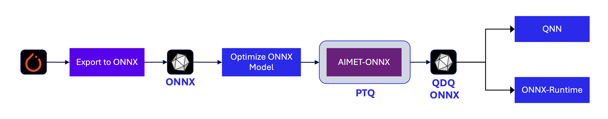
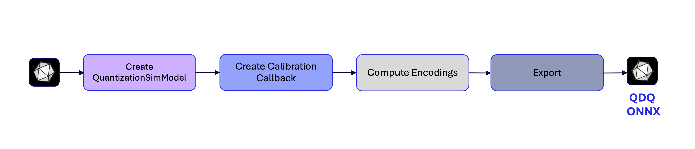

Post Training Quantization¶
Post-Training Quantization (PTQ) is the process of determining the appropriate scale and offset parameters for the quantizers inserted into a model’s computation graph. While quantization parameters for weights can typically be precomputed, determining parameters for activations requires running a small, representative dataset through the model to collect range statistics.
This process of computing scale and offset values is commonly referred to as calibration.
Both aimet-onnx or aimet-torch supports PTQ.

We recommend using aimet-onnx for PTQ for the following reasons:
- Captured graph
Optimize model before quantization
- Better alignment downstream
PyTorch may export certain operation to multiple operations in ONNX leading to missing quantizer information.
This missing quantizer information could lead to accuracy difference between on-target and off-target(simulation).
Workflow¶

Let’s take an example for calibrating a MobileNetV2 model.
Prerequisites¶
Download ImageNet dataset
wget -P ./imagenet_dataset https://image-net.org/data/ILSVRC/2012/ILSVRC2012_devkit_t12.tar.gz
wget -P ./imagenet_dataset https://image-net.org/data/ILSVRC/2012/ILSVRC2012_img_val.tar
If you already have imagenet dataset locally that you would like to use, simply replace dataset path from imagenet_dataset later.
Load PyTorch model and dataset
Note
The examples below use a pre-trained MobileNetV2 model. You can also load your model instead.
Important
aimet_torch 2 is fully backward compatible with all the public APIs of aimet_torch 1.x. If you are
using low-level components of QuantizationSimModel, see the aimet_torch 1 to aimet_torch 2 Migration Guide.
import torch
import torch.cuda
from torchvision.datasets import ImageNet
from tqdm import tqdm
To perform quantization simulation with aimet_torch, your model definition must conform to
the guidelines at PyTorch model guidelines.
For example, torch.nn.functional() defined in the forward pass should be changed to the equivalent
torch.nn.Module.
from torchvision.models import mobilenet_v2, MobileNet_V2_Weights
model = mobilenet_v2(weights=MobileNet_V2_Weights.DEFAULT).to(device)
from torch.utils.data import DataLoader, random_split
from torchvision import transforms
BATCH_SIZE = 32
NUM_CALIBRATION_SAMPLES = 1024
def get_calibration_and_eval_data_loaders(dataset_path: str, batch_size: int):
"""
Returns calibration and evaluation data-loader for ImageNet dataset from provided path
"""
transform = transforms.Compose(
[
transforms.Resize(256),
transforms.CenterCrop(224),
transforms.ToTensor(),
transforms.Normalize(mean=[0.485, 0.456, 0.406], std=[0.229, 0.224, 0.225]),
]
)
dataset = ImageNet(dataset_path, split='val', transform=transform)
calibration_dataset, eval_dataset = random_split(
dataset, [.9, 0.1]
)
calibration_data_loader = DataLoader(calibration_dataset, shuffle=True, batch_size=batch_size)
eval_data_loader = DataLoader(eval_dataset, shuffle=True, batch_size=batch_size)
return calibration_data_loader, eval_data_loader
PATH_TO_IMAGENET = './imagenet_dataset'
calibration_data_loader, eval_data_loader = get_calibration_and_eval_data_loaders(PATH_TO_IMAGENET, BATCH_SIZE)
import os
import numpy as np
import onnx
import torch
from tqdm import tqdm
from torchvision.models import MobileNet_V2_Weights, mobilenet_v2
pt_model = mobilenet_v2(weights=MobileNet_V2_Weights.DEFAULT)
input_shape = (1, 3, 224, 224)
dummy_input = torch.randn(input_shape)
# Modify file_path to save model at a different location
file_path = os.path.join('./', 'mobilenet_v2.onnx')
torch.onnx.export(pt_model,
(dummy_input,),
file_path,
input_names=['input'],
output_names=['output'],
dynamic_axes={
'input': {0: 'batch_size'},
'output': {0: 'batch_size'},
},
dynamo=False,
)
# Load exported ONNX model
model = onnx.load_model(file_path)
from torchvision import transforms, datasets
from torch.utils.data import DataLoader, random_split
BATCH_SIZE = 32
NUM_CALIBRATION_SAMPLES = 1024
def get_calibration_and_eval_data_loaders(path: str, batch_size: int):
"""
Returns calibration and evaluation data-loader for ImageNet dataset from provided path
"""
transform = transforms.Compose(
[
transforms.Resize(256),
transforms.CenterCrop(224),
transforms.ToTensor(),
transforms.Normalize(mean=[0.485, 0.456, 0.406], std=[0.229, 0.224, 0.225]),
]
)
dataset = datasets.ImageNet(path, split='val', transform=transform)
calibration_dataset, eval_dataset = random_split(
dataset, [.9, 0.1]
)
calibration_data_loader = DataLoader(calibration_dataset, shuffle=True, batch_size=batch_size)
eval_data_loader = DataLoader(eval_dataset, shuffle=True, batch_size=batch_size)
return calibration_data_loader, eval_data_loader
# Change path here to point to different dataset
PATH_TO_IMAGENET = './imagenet_dataset'
calibration_data_loader, eval_data_loader = get_calibration_and_eval_data_loaders(PATH_TO_IMAGENET, BATCH_SIZE)
Optionally simplify the exported onnx graph before quantization. This is not strictly required but may improve accuracy and runtime performance.
import onnxsim
model, _ = onnxsim.simplify(model)
Step 1: Creating a QuantSim model¶
Use AIMET to create a QuantizationSimModel. AIMET inserts
fake quantization operations in the model graph and configures them.
from aimet_torch.common.defs import QuantScheme
from aimet_torch.common.quantsim_config.utils import get_path_for_per_channel_config
from aimet_torch import QuantizationSimModel
input_shape = (1, 3, 224, 224)
dummy_input = torch.randn(input_shape).to(device)
sim = QuantizationSimModel(model,
dummy_input=dummy_input,
quant_scheme=QuantScheme.training_range_learning_with_tf_init,
default_param_bw=8,
default_output_bw=16,
config_file=get_path_for_per_channel_config())
from aimet_onnx.common.defs import QuantScheme
import aimet_onnx
from aimet_onnx import QuantizationSimModel
# Optionally use ["CUDAExecutionProvider", "CPUExecutionProvider"] to accelerate quantization with Nvidia GPU
providers = ["CPUExecutionProvider"]
sim = QuantizationSimModel(model,
param_type=aimet_onnx.int8,
activation_type=aimet_onnx.int16,
quant_scheme=QuantScheme.min_max,
config_file="default",
providers=providers)
Step 2: Creating a calibration callback¶
Before you can use the QuantizationSimModel for inference or training, you must compute
scale and offset quantization parameters for each ‘quantizer’ node.
Create a routine to pass small, representative data samples through the model. A quick way to do this is to use the existing train or validation data loader to extract samples and pass them to the model.
500 to 1000 representative data samples are sufficient to compute the quantization parameters.
from typing import Any, Optional
device = "cuda:0" if torch.cuda.is_available() else "cpu"
def pass_calibration_data(model: torch.nn.Module, forward_pass_args: Optional[Any]=None):
"""
The User of the QuantizationSimModel API is expected to write this callback based on their dataset.
"""
data_loader = forward_pass_args
num_batches = NUM_CALIBRATION_SAMPLES // BATCH_SIZE
model.eval()
with torch.no_grad():
for batch, (input_data, _) in enumerate(data_loader):
inputs_batch = input_data.to(device) # labels are ignored
model(inputs_batch)
if batch >= num_batches:
break
input_name = model.graph.input[0].name
def onnx_data_generator(num_batches):
"""
Example conversion from torch dataloader to onnx model inputs
"""
for i, (data, _) in enumerate(calibration_data_loader):
if i >= num_batches:
break
yield {input_name: data.numpy()}
Step 3: Computing encodings¶
Next, call QuantizationSimModel.compute_encodings() to use the callback to pass representative
data through the quantized model. The quantizers in the quantized model use the observed inputs
to initialize their quantization encodings. “Encodings” refers to the scale and offset quantization parameters.
sim.compute_encodings(pass_calibration_data, forward_pass_callback_args=calibration_data_loader)
In onnx, calibration can be done through a callback function or by passing calibration
data directly as an iterable of model inputs (Iterable[Dict[str, np.ndarray]])
sim.compute_encodings(onnx_data_generator(NUM_CALIBRATION_SAMPLES // BATCH_SIZE))
Step 4: Evaluation¶
Next, evaluate the QuantizationSimModel to measure the model’s accuracy after quantization.
# Determine simulated quantized accuracy
sim.model.eval()
correct = 0
total = 0
with torch.no_grad():
for inputs, labels in tqdm(eval_data_loader):
inputs, labels = inputs.to(device), labels.to(device)
outputs = sim.model(inputs)
_, predicted = torch.max(outputs.data, 1)
total += labels.size(0)
correct += (predicted == labels).sum().item()
print(f'Accuracy: {correct / total:.4f}')
correct_predictions = 0
total_samples = 0
for i, (inputs, labels) in enumerate(tqdm(eval_data_loader)):
pred_probs, *_ = sim.session.run(None, {input_name: inputs.numpy()})
pred_labels = np.argmax(pred_probs, axis=1)
correct_predictions += np.sum(pred_labels == labels.numpy())
total_samples += labels.shape[0]
accuracy = correct_predictions / total_samples
print(f'Quantized accuracy (W8A16): {accuracy:.4f}')
Quantized accuracy (W8A16): 0.7173
Step 5: Exporting the model¶
If the off-target accuracy of the quantized model is within acceptable limits (Step 4), we can proceed with deployment and export the model to ONNX format. During export, all intermediate quantization operations are removed, and the quantization parameters—scale and offset—are serialized into a JSON file.
# Export the model for on-target inference.
# Export the model which saves pytorch model without any simulation nodes and saves encodings file for both
# activations and parameters in JSON format at provided path.
import aimet_torch
aimet_torch.onnx.export(
sim.model,
dummy_input,
"quantized_mobilenet_v2.onnx",
dynamo=False,
opset_version=21,
)
# Export the model for on-target inference. Saves ONNX model without quantization nodes
# and encodings file with all tensor encodings in JSON format at provided path.
sim.export(path='./', filename_prefix='quantized_mobilenet_v2')
API¶
- class aimet_torch.QuantizationSimModel(model, dummy_input, quant_scheme=None, default_output_bw=8, default_param_bw=8, in_place=False, config_file=None, default_data_type=QuantizationDataType.int)[source]
Class that simulates the quantized model execution on a target hardware backend.
QuantizationSimModel simulates quantization of a given model by converting all PyTorch modules into quantized modules with input/output/parameter quantizers as necessary.
Example
>>> model = torchvision.models.resnet18() >>> dummy_input = torch.randn(1, 3, 224, 224) >>> sim = QuantizationSimModel(model, dummy_input) >>> print(model) ResNet( (conv1): Conv2d( 3, 64, kernel_size=(7, 7), stride=(2, 2), padding=(3, 3), bias=False ) ... ) >>> print(sim.model) ResNet( (conv1): QuantizedConv2d( 3, 64, kernel_size=(7, 7), stride=(2, 2), padding=(3, 3), bias=False (param_quantizers): ModuleDict( (weight): QuantizeDequantize(shape=(), qmin=-128, qmax=127, symmetric=True) ) (input_quantizers): ModuleList( (0): QuantizeDequantize(shape=(), qmin=0, qmax=255, symmetric=False) ) (output_quantizers): ModuleList( (0): None ) ) ... )
- Parameters:
model (
Module) – Model to simulate the quantized execution ofdummy_input (
Union[Tensor,Sequence[Tensor]]) – Dummy input to be used to capture the computational graph of the model. All input tensors are expected to be already placed on the appropriate devices to run forward pass of the model.quant_scheme (
Union[str,QuantScheme]) – Quantization scheme that indicates how to observe and calibrate the quantization encodings (Default: QuantScheme.post_training_tf_enhanced)default_output_bw (
int) – Default bitwidth (4-31) to use for quantizing all layer inputs and outputs unless otherwise specified in the config file. (Default: 8)default_param_bw (
int) – Default bitwidth (4-31) to use for quantizing all layer parameters unless otherwise specified in the config file. (Default: 8)in_place (
bool) – If True, then the given model is modified in-place into a quantized model. (Default: False)config_file (
Optional[str]) – File path or alias of the configuration file. Alias can be one of { default, htp_v66, htp_v68, htp_v69, htp_v73, htp_v75, htp_v79, htp_v81, htp_v85, enpu_v6, enpu_v7 } (Default: “default”)default_data_type (
QuantizationDataType) – Default data type to use for quantizing all inputs, outputs and parameters unless otherwise specified in the config file. Possible options are QuantizationDataType.int and QuantizationDataType.float. Note that the mode default_data_type=QuantizationDataType.float is only supported with default_output_bw=16 or 32 and default_param_bw=16 or 32. (Default: QuantizationDataType.int)
- compute_encodings(forward_pass_callback, forward_pass_callback_args=<class 'aimet_torch.quantsim.quantsim._NOT_SPECIFIED'>)[source]
Computes encodings for all quantizers in the model.
- Overloads:
forward_pass_callback (
Callable[[Module],Any])forward_pass_callback (Callable[[torch.nn.Module, T], Any]), forward_pass_callback_args (T)
This API will invoke forward_pass_callback, a function written by the user that runs forward pass(es) of the quantized model with a small, representative subset of the training dataset. By doing so, the quantizers in the quantized model will observe the inputs and initialize their quantization encodings according to the observed input statistics.
This function is overloaded with the following signatures:
- compute_encodings(forward_pass_callback)[source]
- Parameters:
forward_pass_callback (Callable[[torch.nn.Module], Any]) – A function that takes a quantized model and runs forward passes with a small, representative subset of training dataset
- compute_encodings(forward_pass_callback, forward_pass_callback_args)[source]
- Parameters:
forward_pass_callback (Callable[[torch.nn.Module, T], Any]) – A function that takes a quantized model and runs forward passes with a small, representative subset of training dataset
forward_pass_callback_args (T) – The second argument to forward_pass_callback.
Example
>>> sim = QuantizationSimModel(...) >>> _ = sim.model(input) # Can't run forward until quantizer encodings are initialized RuntimeError: Failed to run QuantizeDequantize since quantization parameters are not initialized. Please initialize the quantization parameters using `compute_encodings()`. >>> def run_forward_pass(quantized_model: torch.nn.Module): ... for input in train_dataloader: ... with torch.no_grad(): ... _ = quantized_model(input) ... >>> sim.compute_encodings(run_forward_pass) >>> _ = sim.model(input) # Now runs successfully!
- export(path, filename_prefix, dummy_input, *args, **kwargs)[source]
Warning
This export method is deprecated. Please use the new export API sim.onnx.export() or
aimet_torch.onnx.export()instead.This method exports out the quant-sim model so it is ready to be run on-target.
Specifically, the following are saved:
The sim-model is exported to a regular PyTorch model without any simulation ops
The quantization encodings are exported to a separate JSON-formatted file that can then be imported by the on-target runtime (if desired)
Optionally, An equivalent model in ONNX format is exported. In addition, nodes in the ONNX model are named the same as the corresponding PyTorch module names. This helps with matching ONNX node to their quant encoding from #2.
- Parameters:
path (
str) – path where to store model pth and encodingsfilename_prefix (
str) – Prefix to use for filenames of the model pth and encodings filesdummy_input (
Union[Tensor,Tuple]) – Dummy input to the model. Used to parse model graph. It is required for the dummy_input to be placed on CPU.onnx_export_args – Optional export argument with onnx specific overrides provided as a dictionary or OnnxExportApiArgs object. If not provided, defaults to “opset_version” = None, “input_names” = None, “output_names” = None, and for torch version < 1.10.0, “enable_onnx_checker” = False.
propagate_encodings – If True, encoding entries for intermediate ops (when one PyTorch ops results in multiple ONNX nodes) are filled with the same BW and data_type as the output tensor for that series of ops. Defaults to False.
export_to_torchscript – If True, export to torchscript. Export to onnx otherwise. Defaults to False.
use_embedded_encodings – If True, another onnx model embedded with fakequant nodes will be exported
export_model – If True, then ONNX model is exported. When False, only encodings are exported. User should disable (False) this flag only if the corresponding ONNX model already exists in the path specified
filename_prefix_encodings – File name prefix to be used when saving encodings. If None, then user defaults to filename_prefix value
apply_param_qdq –
If True (default), weights are quantize-dequantized (rounded onto the quantization grid) before export so the exported weights match the simulated weights. If False, the original floating point weights are exported unchanged.
Warning
apply_param_qdq=Falseis intended for debugging only and must NOT be used to export a model for on-target deployment, as the exported weights will not match the quantized weights the target runs.
- load_encodings(encodings, strict=True, partial=True, requires_grad=None, allow_overwrite=True)
- Parameters:
encodings (
Union[Mapping,str,PathLike]) – Encoding dictionary or path to the encoding dictionary json file.strict (
bool) – If True, an error will be thrown if the model doesn’t have a quantizer corresponding to the specified encodings.partial (
bool) – If True, the encoding will be interpreted as a partial encoding, and the dangling quantizers with no corresponding encoding will be kept untouched. Otherwise, the dangling quantizers will be removed from the model.requires_grad (
Optional[bool]) – Whether or not the quantization parameters loaded from the encodings require gradient computation during training. If None,requires_gradflag of the quantization parameters will be kept unchanged.allow_overwrite (
bool) – Whether or not the quantization parameters loaded from the encodings can be overwriiten by compute_encodings or another load_encodings. If None, whether the quantizer is overwrieable will be kept unchanged.
Note
We recommend you use onnx-simplifier before creating the QuantSim model.
Since ONNX Runtime is used for optimized inference only, ONNX framework supports Post Training Quantization schemes (such as TF or TF-enhanced) to compute the encodings.
- class aimet_onnx.QuantizationSimModel(model, *, param_type=int8, activation_type=int8, quant_scheme=QuantScheme.min_max, config_file=None, dummy_input=None, user_onnx_libs=None, providers=None, path=None, session_options_kwargs=None)[source]
Class that simulates the quantized model execution on a target hardware backend.
- Parameters:
model (
ModelProto) – ONNX ModelProto to quantizeparam_type (
Union[str,qtype]) – quantized type to use for parameter tensors. Can be { int2, int4, int8, int16, float16, float32, float8e4m3fn, float8e5m2 } oraimet_onnx.qtypeactivation_type (
Union[str,qtype]) – quantized type to use for activation tensors. Can be { int2, int4, int8, int16, float16, float32, float8e4m3fn, float8e5m2 } oraimet_onnx.qtypequant_scheme (
Union[str,QuantScheme]) – Quantization scheme to use for calibration. Can be { min_max, tf_enhanced } orQuantSchemeconfig_file (
Optional[str]) – File path or alias of the configuration file. Alias can be one of { default, htp_v66, htp_v68, htp_v69, htp_v73, htp_v75, htp_v79, htp_v81, htp_v85, enpu_v6, enpu_v7 } (Default: “default”)dummy_input (
Optional[Dict[str,ndarray]]) – Sample input to the model. Only needed for non shape-inferable models with parameterized shapesuser_onnx_libs (
Optional[List[str]]) – List of paths to all compiled ONNX custom ops librariesproviders (
Optional[Sequence[Union[str,Tuple[str,Dict[Any,Any]]]]]) – Onnxruntime execution providers to use when building InferenceSession. If None, default provider is “CPUExecutionProvider”. For a model with bfloat16 tensors, the default is CUDA (if available) then CPU, since ORT’s CPU EP lacks many bfloat16 kernels.path (
Optional[str]) – Directory to save temporary artifacts.session_options_kwargs (
Optional[Dict[str,Any]]) – Attributes to set on the sim’sonnxruntime.SessionOptions(e.g.{"intra_op_num_threads": 2}). An unknown attribute name raises AttributeError.
- compute_encodings(*args, **kwargs)[source]
Computes encodings for all quantizers in the model.
- Overloads:
inputs (
Iterable[Dict[str,ndarray]])forward_pass_callback (
Callable[[InferenceSession],Any])forward_pass_callback (Callable[[ort.InferenceSession, T], Any]), forward_pass_callback_args (T)
This API will invoke forward_pass_callback, a function written by the user that runs forward pass(es) of the quantized model with a small, representative subset of the training dataset. By doing so, the quantizers in the quantized model will observe the inputs and initialize their quantization encodings according to the observed input statistics.
This function is overloaded with the following signatures:
- compute_encodings(inputs)[source]
- Parameters:
inputs (Iterable[Dict[str, np.ndarray]]) – The set of model input samples to use during calibration
- compute_encodings(forward_pass_callback)[source]
- Parameters:
forward_pass_callback (Callable[[ort.InferenceSession], Any]) – A function that takes a quantized model and runs forward passes with a small, representative subset of training dataset
- compute_encodings(forward_pass_callback, forward_pass_callback_args)[source]
- Parameters:
forward_pass_callback (Callable[[ort.InferenceSession, T], Any]) – A function that takes a quantized model and runs forward passes with a small, representative subset of training dataset
forward_pass_callback_args (T) – The second argument to forward_pass_callback.
Example
>>> sim = QuantizationSimModel(...) >>> def run_forward_pass(session: ort.InferenceSession): ... for input in dataset: ... _ = sess.run(None, {"input": input}) ... >>> sim.compute_encodings(run_forward_pass)
Note
inputsmay contain bfloat16 arrays (ml_dtypes.bfloat16) for models with bfloat16 inputs.InferenceSession.runcannot accept these, so aforward_pass_callbackfor such a model must feed the session throughrun_with_ort_valuesor IOBinding instead.
- export(path, filename_prefix, export_model=True, *, export_int32_bias=None, encoding_version=None, force_activation_as='unsigned')[source]
Compute encodings and export to files
- Parameters:
path (
str) – dir to save encoding filesfilename_prefix (
str) – filename to save encoding filesexport_model (
bool) – If True, then ONNX model is exported. When False, only encodings are exported.export_int32_bias (
bool|None) – If true, generate and export int32 bias encoding on the fly. Default: True if encoding version is 2.0.0 or higher, otherwise False.encoding_version (
str|None) – Version of the encoding format to use. (default: 1.0.0) Supported versions are: [‘0.6.1’, ‘1.0.0’, ‘2.0.0’, ‘2.1.0’]force_activation_as (
Optional[Literal['unsigned','signed']]) – Force representing quantized activations as signed or unsigned integers. This argument is only applicable for encoding version 2.0.0. For versions 0.6.1 and 1.0.0, this argument is ignored. (default: “unsigned”)
Example
>>> sim.export(path=".", filename_prefix="model", encoding_version="2.0.0")
- aimet_onnx.quantsim.load_encodings_to_sim(quant_sim_model, onnx_encoding_path, strict=True, *, allow_overwrite=True, disable_missing_quantizers=True)[source]
Loads the saved encodings to quant sim model. The encoding filename to load should end in .encodings, generated as part of quantsim export.
- Parameters:
quant_sim_model (
QuantizationSimModel) – Quantized model to load encodings for. Note: The model configuration should be the same as when encodings were exported.onnx_encoding_path (
str|dict) – Path of the encodings file to load.strict – If set to True and encoding settings between encodings to load do not line up with Quantsim initialized settings, an assertion will be thrown. If set to False, quantizer settings will update to align with encodings to load.
allow_overwrite – If true, loaded encodings will be overwritten by subsequent compute_encodings calls If false, loaded quantizer encodings will be frozen.
diable_missing_quantizers – If true, quantizers which do not have encodings will be disabled.
- Return type:
List[_EncodingMismatchInfo]- Returns:
List of EncodingMismatchInfo objects containing quantizer names and mismatched settings